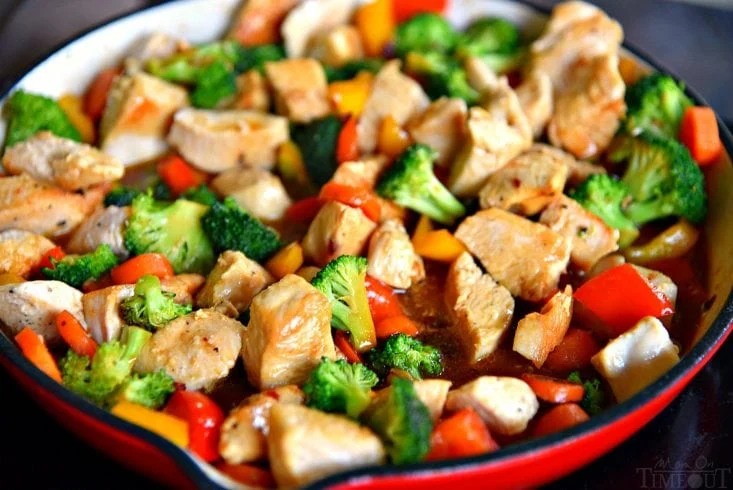

Chicken Stir Fry
A chicken stir fry loaded with vegetables and with a unique sauc.
ingredient list
- 1 lb chicken breast
- 2 tbsp olive oil
- 2 cups brocoli
- 1/2 yellow bell pepper
- 1/2 red bell pepper
- 1/2 cup baby carrots
- 2 tsp minced ginger
- 2 garlic cloves
- salt and pepper
Stir fry sauce
- 1 tbsp corn starch
- 2 tbsp water
- 1/4 cup chicken broth
- 3 tbsp soy sauce
- 1/4 cup honey
- 1 tbsp sasame oil
- 1/2 tsp crushed re pepper flakes
Cooking procedure
- In a bowl whisk together corn starch and water. Add remaining sauce ingredients and whisk together. Set aside.
- Add one tbsp of olive oil to skillet and heat over medium-high.
- Add chicken and season with salt and pepper. Cook for 3-5 min until cooked through and set aside.
- reduce heat to medium and remaining olive oil to skillet.
- Add brocoli, bell pepper, and carrots and cook while stirring occasionally, just unitl tender. Add ginger and garlic and cook for an additional minute.
- Add chicken back to skillet and stir to combine.
- Whisk stir fry sauce and pour into skillet and stir gently to combine.
- Bring to boil, stirring occasionally, and let boil for 1 minute.
